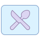

safesploitOrg Project Overview
A central hub for all projects hosted under *.git.safesploit.com. Here, you'll find links to each project, providing a convenient way to navigate the safesploitOrg ecosystem.



Dining Project
Explore dining-related tools and resources.
Table of Contents (TOC) Project
Structured contents for organised information.
Cron Project
Manage scheduled tasks efficiently.
PGP Project
Security tools for PGP encryption.
QR Code Project
Create and manage QR codes for various applications.
VLSM Calculator
Variable Length Subnet Masking tools and resources.
SecurBrowser Toolkit
Secure browsing toolkit for enhanced privacy and security.
PassFabricator
Client-side password generator.
Multipath Config Generator
Client-side multipath generator.
Multipath Config Generator
Client-side multipath generator.